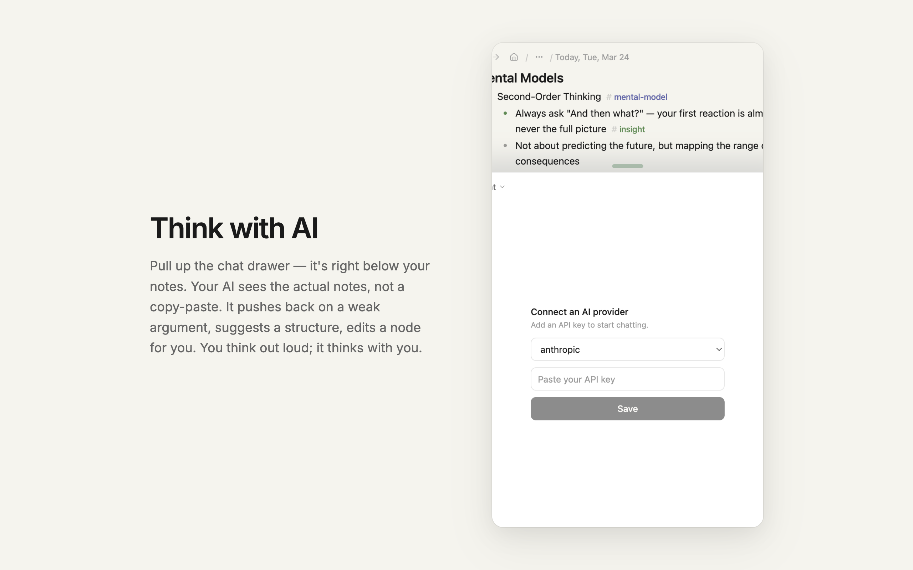

Pull up the chat drawer — it's right below your notes. Your AI sees the actual notes, not a copy-paste. It pushes back on a weak argument, suggests a structure, edits a node for you. You think out loud; it thinks with you.
